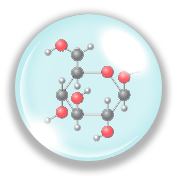
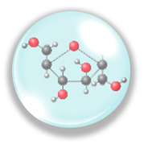

Brightum
Harnessing the power of the marine – derived saccharides to rejuvenate the skin.
The BrightumHarnessing the power of the marine – derived saccharides to rejuvenate the skin.
The Brightum


FaceSemen
vs.
Semen
FaceSemen and Semen share some chemistry similarities.
| Semen | FaceSemen | |
| PH | 7.7* | 7.2 |
| Ion | ||
| Citrate | ||
| Saccharide | ||
| Protein | ||
| Sperm | ||
| Bioactive** | ||
| Appearance |
Translucent white |
Translucent white |
*This is the average of pH values reported from 34 scientific studies. **Skin bioactives not found in semen.
The scientific mission to reveal the composition of semen can be dated back to the 16th century. We now know that semen is a unique fluid that not only carries the magic sperm, but also many other chemical substances. Citrate, Ions (Ca, Cl, K, Mg, Na, Zn), saccharides (carbohydrates) and proteins are the most essential and abundant substances of semen fluid.
Citrate, ions, saccharides, proteins and others are meticulously used to create a unique nourishing fluid for visibly healthy, smooth, even and glowing skin.
No sperm is found in FaceSemen, but multiple skin bioactives such as Brightum, Dermsome or other age-defying technologies which have been scientifically proven to revive, revitalize and rejuvenate skin.
FaceSemen is a bold, creative and potent youth-boosting potion that is crystalized by the decades of scientific expertise and the never-ending quest for the most coveted innovation. Ingredients are meticulously selected, referencing semen, combining all to achieve an ageless harmony. It delivers an exquisite and sensational experience that is fully indulgent with potency.
FaceSemen is a bold, creative and potent youth-boosting potion that is crystalized by the decades of scientific expertise and the never-ending quest for the most coveted innovation. Ingredients are meticulously selected, referencing semen, combining all to achieve an ageless harmony. It delivers an exquisite and sensational experience that is fully indulgent with potency.
FaceSemen
vs.
Semen
Semen
7.7*


FaceSemen
7.2
*This is the average of pH values reported from 34 scientific
studies of human semen.
**Unique skin bioactive not found in the semen fluid.
The scientific mission to reveal the composition of semen can be dated back to the 16th century. We now know that semen is a unique fluid that not only carries the magic sperm, but also many other chemical substances. Citrate, Ions (Ca, Cl, K, Mg, Na, Zn), saccharides (carbohydrates) and proteins are the most essential and abundant substances of semen fluid.
Citrate, ions, saccharides, proteins and others are meticulously used to create a unique nourishing fluid for visibly
healthy, smooth, even and glowing skin.
No sperm is found in FaceSemen, but multiple skin bioactives such as Brightum, Dermsome or other age-defying technologies which have been scientifically proven to revive, revitalize and rejuvenate skin.
Calcium (Ca), magnesium (Mg), potassium (K), sodium (Na) and Zinc (Zn) are the most abundant ions of semen fluid. These ions are critical elements that constitute the buffering environment for sperm motility and fertilization.
Ions are unique components of FaceSemen. Ca, Mg, K, Na, Zn and many other minerals and trace elements are retrieved from sea salt or deep sea water. They serve as a natural conditioning that exfoliates and revitalizes skin.
minerals
Na
K
Mg
Ca
Zn
Semen
FaceSemen
Citrate exists in a variety of fruits and vegetables such as limes and blackberries. Citrate is also abundant in semen. It is a critical buffer component of semen fluid.
Citrate is a unique component of FaceSemen. Citric acid or citrate salt is integrated to banlance the pH (a scale of acidity) of FaceSemen. Moreover, citrate promotes skin exfoliation and skin cell turnover.
Citric
Acid
Sodium
Citrate
Potassium
Citrate
Semen
FaceSemen
Saccharides are carbohydrates that include glucose, fructose and many others. Glucose and fructose are the most abundant saccharides found in semen fluid. They are pivotal energy sources for sperms.
Natural moisturizing factors (NMFs) are naturally present on the skin that allow the skin to remain moisturized. Glucose and fructose are NMFs. They are critical components of FaceSemen to retain the skin’s water hemostasis for a healthier skin.
glucose
fructose
Semen
FaceSemen
Protein is a major component of semen fluid. It is uncertain, however, what exact proteins exist within the semen fluid. Scientific studies suggest that proteins, all together maintains the fertility of sperm.
Various selected proteins are found in
the FaceSemen. They are superior hydrating factors that not
only moisturize the skin but also works with other ingredients
to create a unique hydrating barrier for skin.
collagen
elastin
whey
protein
others
Semen
FaceSemen
Semen contains many bioactives critical for maintaining sperm function. Whether these substances are also beneficial for skin remain to be elucidated. Whether a semen facial benefit skin is still a myth without compelling scientific evidence.
Varieties of bioactives are found in the FaceSemen. These are the unique bioactive molecules that unleash the ultimate resilient power of FaceSemen. Their potencies and efficacies to revive, revitalize and rejuvenate skin have been scientifically proven. R&D is ongoing, more to come in the future.
BrightumTM
Technology
All-in-one
age-defying
solution
DermsomeTM
Technology
Super
skin calming
complex
Semen
FaceSemen
What exactly constitutes semen fluid is yet to be elucidated. Scientific mission to understand components of semen continues. Hence, FaceSemen is continuously enhanced and improved.
- New age-defying semen ingradients
will be selectively added,
accordingly to our increased understanding of semen composition.
- Contineous R&D will lead to the
discovery of better bioactives,
added in,
to boost the youth miracle of
FaceSemen.
Brightum
Technology
Dermsome
Technology
More to come
in the future
Ion
Citrate
Bioactive
Saccharide
Protein
More